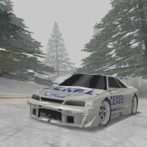
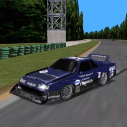
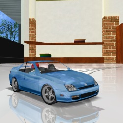
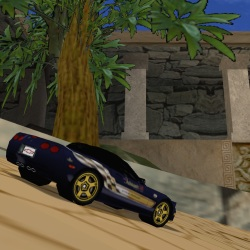

Classic Conversions
The classics, old and new(er)
|
 Zexel Skyline '97 |
Tommy Kaira ZZII Pack |
 R30 Silhouette Formula |
|
GTAVC Banshee |
 Honda Prelude Type-SH |
 Callaway Sledgehammer |
 Ferrari 456 Estate |
 Shelby Cobra Daytona Coupe |
 Venturi Atlantique 400GT |
|
Porsche 917K Race Car |
 Lotus Elise GT1 |
 Corvette Indy 500 Pace Car |